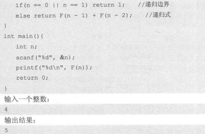

递归
两个重要概念：
- 递归边界
- 递归式（递归调用）
其中的递归式是将原问题分成若干子问题的手段，递归边界则是分解的尽头。（如果没有尽头就会无限分解）
🌰 使用递归求解n的阶乘

🌰 求Fibonacci数列的第n项

🌰 全排列（Full Permutation）
一个数列所有的排列方式的集合称为全排列。
【举例】如1,2,3的全排列：(1,2,3),(1,3,2),(2,1,3),(2,3,1),(3,1,2),(3,2,1)；（按字典序）
【目的】按字典序从小到大输出全排列：其中(a1,a2,…an)的字典序小于(b1,b2,…bn)，是指存在一个i，使得a1=b1,a2=b2,……,ai<bi成立；
#include<cstdio>
const int maxn = 11; // max number
int n, p[maxn], hashTable[maxn] = {false};
// p: Now permutation, hashTable: Record whether x has been placed in p
void generateP(int index)
{
if(index == n + 1) // recursion boundary
{
for(int i = 1; i <= n; i++) // print result
{
printf("%d", p[i]);
}
printf("\n");
return;
}
for(int x = 1; x <= n; x++)
{
if(hashTable[x] == false) // x hasn't been used
{
p[index] = x; // use x (place x in p)
hashTable[x] = true; // x has been used
generateP(index + 1); // recursion (resolve the sub-problems when p[index] = x)
hashTable[x] = false; // restore the x (resolved)
}
}
}
int main()
{
n = 3; // want to print 1~3 full permutation
generateP(1); // recursion start from 1
return 0;
}
🌰 n皇后问题
#include<cstdio>
#include<cmath>
#include<algorithm>
using namespace std;
const int maxn = 11;
int n, P[maxn], hashTable[maxn] = {false};// p: 当前排列, hashTable: 记录x是否已经放入pint counter = 0;
void generateP1(int index){
/* 递归边界 生成一个排列 */
if(index == n + 1){
bool flag = true; // 当前排列合法
/* 遍历任意两个皇后 */
for(int i = 1; i <= n; i++){
for(int j = i + 1; j <= n; j++){
for(int j = i + 1; j <= n; j++){
if(abs(i - j) == abs(P[i] - P[j])){ // 在同一对角线上
flag = false; // 冲突
}
}
}
}
if(flag) counter++;
return;
}
for(int x = 1; x <= n; x++){
if(hashTable[x] == false){
P[index] = x;
hashTable[x] = true;
generateP1(index + 1);
hashTable[x] = false;
}
}
}
void generateP2(int index){
/* 递归边界 */
if(index == n + 1){
counter++;
return;
}
/* 遍历行 */
for(int x = 1; x <= n; x++){
/* 若第x行还没皇后 */
if(hashTable[x] == false){
bool flag = true; // flag为true表示不会与之前的皇后冲突
/* 遍历之前的皇后 */
for(int pre = 1; pre < index; pre++){
/* 判断是否冲突 */
if(abs(index - pre) == abs(x - P[pre])){
flag = false; // 冲突（在同一对角线）
break; // 跳出循环
}
}
/* 无冲突则放置皇后 */
if(flag) {
P[index] = x;
hashTable[x] = true; //占用第x行
generateP2(index + 1); // 处理下一行（子问题）
hashTable[x] = false; // 子问题都处理完了，还原第x行状态
}
}
}
}
int main(){
n = 8; // 棋盘大小 n*n
generateP2(1); //从P[1]开始填
printf("%d\n", counter);
return 0;
}
n皇后问题方法总结
普通枚举（暴力）：随意选取空位摆放。（需要在n²中选n个排列组合算一下次数很多。）
全排列（暴力）： 按列/行逐个摆下去。把所有的子问题都遍历处理到底，最后再检测是否符合要求（见generateP1方法）
全排列（回溯）： 按列/行逐个摆下去。过程中增加检测功能，即若继续放已经不再可能达成目标，则不再遍历处理子问题，立即返回（见generateP2方法）
通枚举要处理行冲突、列冲突、对角线冲突，全排列只需处理对角线冲突